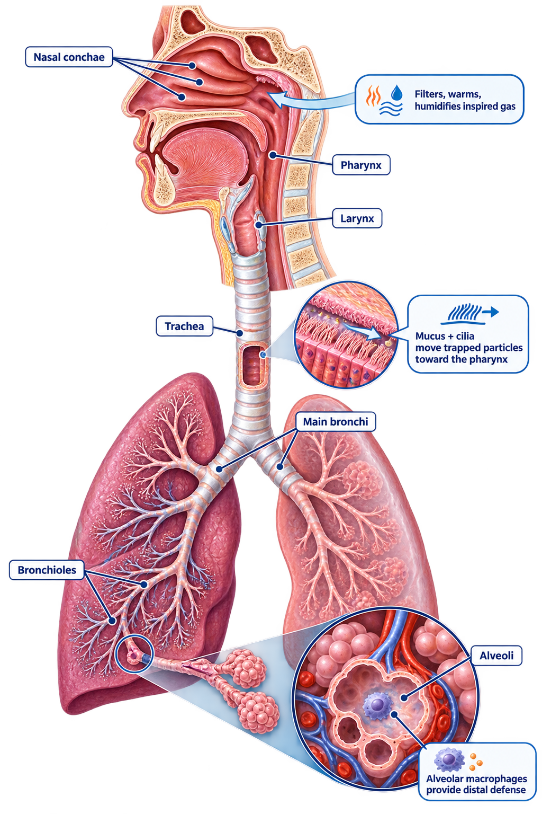

Follow a particle and a breath from the nose to the alveoli. Your job is to identify what each defense does, where it works, and what physiologic consequence follows when that defense fails.
Trace how the upper airway warms and humidifies gas before it reaches the distal lung.

The nasal conchae increase surface area and create turbulence, increasing contact with warm, moist mucosa.
See how mucus hydration and ciliary motion work together to move trapped material toward the pharynx.
Mucus traps. Cilia transport. The cilia must beat through a properly hydrated periciliary layer so the mucus above them can move toward the pharynx.
Place each defense at the airway region where it does its most important work.
Mouse: drag a defense into a target, or click the defense then the target. Keyboard: Tab to a defense, press Enter or Space to select it, then Tab to a target and press Enter or Space to place it. Touch: tap a defense, then tap its target.
Sequence the mechanical steps and identify which failure prevents central-airway clearance.
Builds lung volume for the expulsive maneuver.
Temporarily traps gas while pressure is generated.
Raises intrathoracic pressure.
Creates high expiratory flow and mucus shearing.
Deep inspiration and glottic closure are intact, but expiratory muscles are very weak.
Mucus is hydrated and cilia are intact, but the patient cannot close the glottis effectively.
Cough force is normal, but cilia are damaged and peripheral mucus transport is slow.
Cilia move peripheral conducting-airway secretions toward larger airways. Cough is most effective once secretions reach those larger central airways. One mechanism cannot fully substitute for failure of the other.
Use new scenarios to trace defense failure into secretion retention, airway resistance, and distal risk.
Do not jump from “secretions” to one diagnosis. First identify the failed defense: conditioning, mucus hydration, ciliary transport, cough mechanics, or distal macrophage activity. Then predict the next physiologic effect.
You worked from conditioning and particle trapping through clearance mechanics and downstream physiologic consequences.